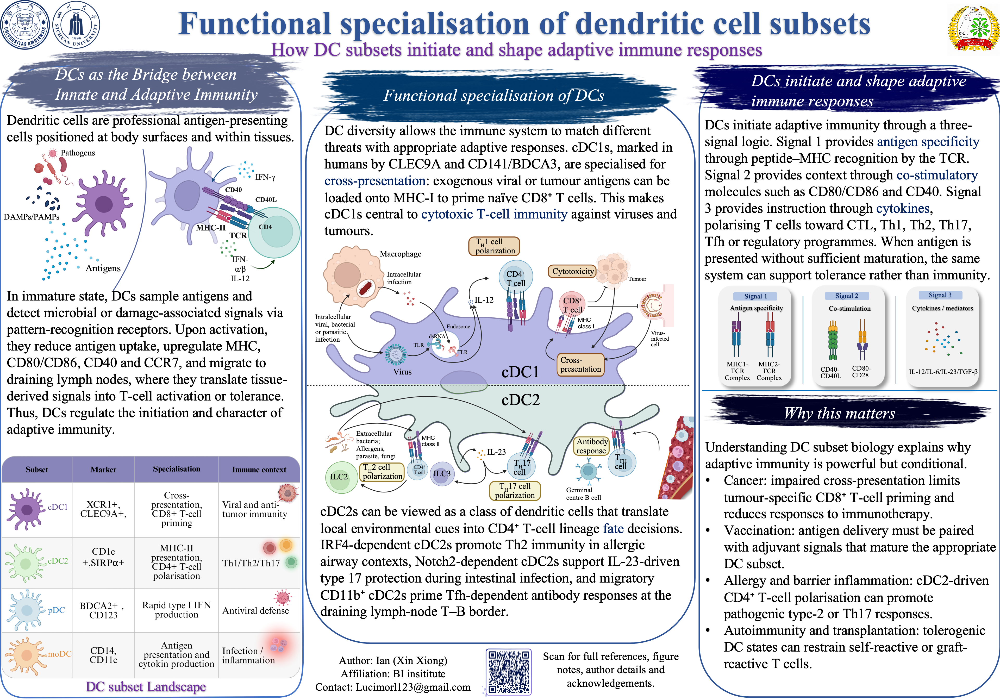

2025年6月 - 至今
泛癌细胞通讯图谱
整合三十余个癌种、约 470 万个单细胞；网页展示其中 70,000 个代表性细胞，并附一篇关于组成与空间联合模块学习的方法笔记。
学术成果
这里按项目整理研究页中各项目的数据视图、研究总结和笔记，后面是学业文件、课程作业与汇报资料。
页面结构
从下方任一项目开始，每张卡片列出相关材料，并链接回研究页的完整记录。
与研究页对应
2025年6月 - 至今
整合三十余个癌种、约 470 万个单细胞；网页展示其中 70,000 个代表性细胞，并附一篇关于组成与空间联合模块学习的方法笔记。
2026年7月 - 8月 · iSURE
20 页研究总结，涵盖转录组、RPPA、免疫印迹与三套公共 KRAS 撤除数据集，最后提出 DNMT1 与 PDK1/AKT 两个假设。
iGEM 2025 · 金奖
SCU-China 团队 wiki 记录了设计思路、蛋白工程与固定化实验。
交互式 3D UMAP
单细胞图谱 / 精细注释
该交互图来自泛癌单细胞大数据整合项目，整合三十余个癌种、约 470 万个细胞。网页端展示其中具有代表性的 70,000 个细胞，并呈现精细细胞亚型注释。项目记录 ↗
Poster_01

主要入口
当前学术简历，包含 GPA、荣誉、科研项目、技术能力和训练经历。
官方成绩单，用于记录课程表现和当前学业情况。
精选阅读笔记，连接代谢、癌症免疫治疗和合成生物学方向的思考。
演示文稿